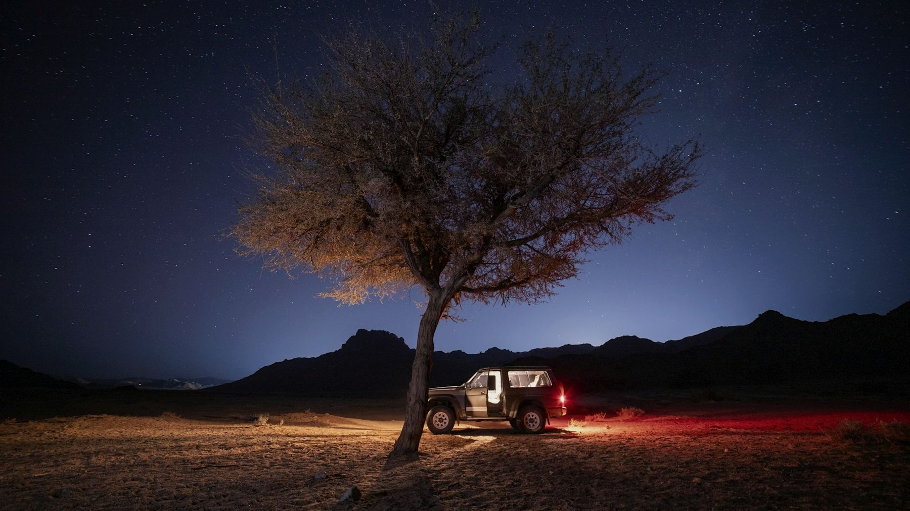
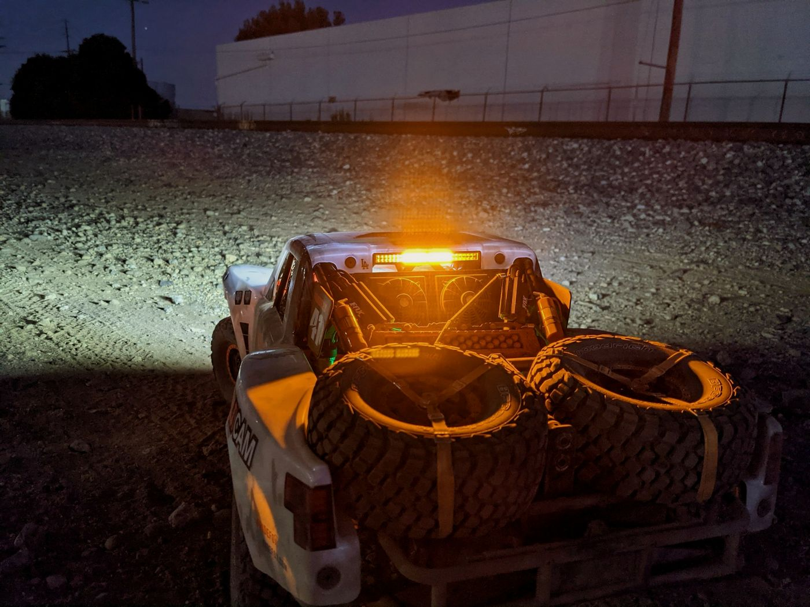
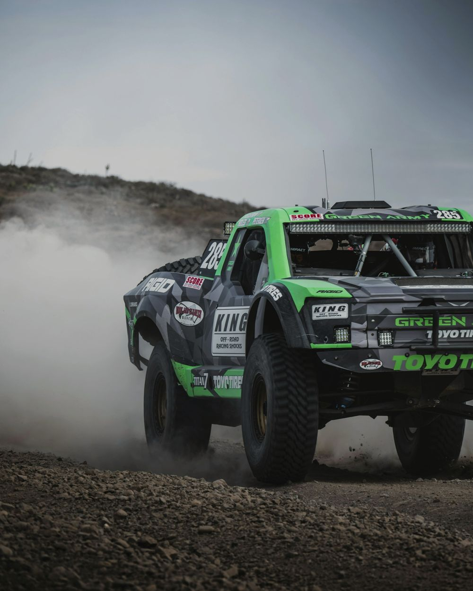
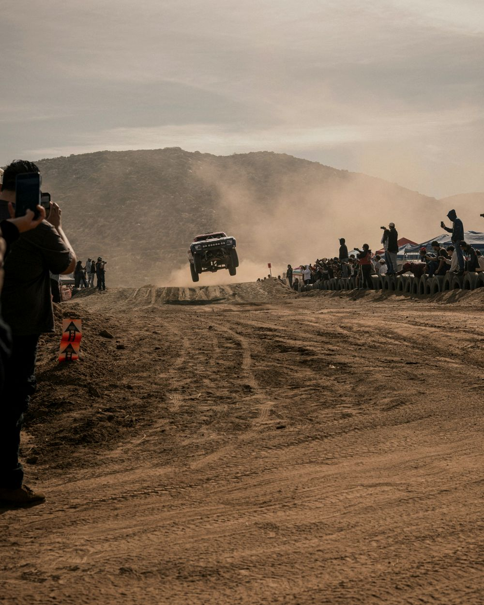
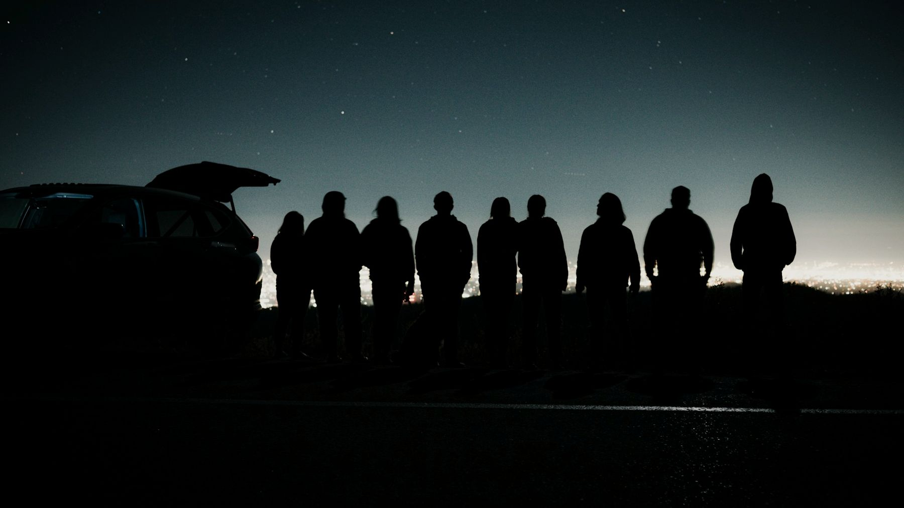

Sample graphics. Racer is made up.
Sample graphics. Racer is made up.
Live race production
Mile 212 has never been on TV. We broadcast every mile of your race, live.
Cameras on course and in the cars, a booth calling it, and every truck on the map. From the start line to the last car in.
Book a broadcast
The dark miles
Most of a desert race happens where nobody can see it. Somewhere past mile 300, a mom is watching a GPS dot that hasn't moved in eleven minutes.
We put a camera on those miles. When the dot stops, she sees why. When the truck moves again, she sees that too.
How our booth sounds at 2 a.m. Sample lines.

The light in the dust
In the dust, you follow the amber light.
Desert trucks run an amber light at the rear. When the dust is too thick to see the hood in front of you, that light is how you find the truck ahead.
That's our job on race day. One clear picture through the noise, for the people who can't be out there.
The show
We run the whole broadcast, so you can run the race.
Course cameras, onboard cameras and spectators' phones all feed one switcher. A producer picks the shot. The booth calls the race. It goes out as one show, wherever your fans watch.
Cameras go in at tech.
We install onboard cameras during inspection. Teams rent them from us, so nobody buys gear for one race. Names, numbers and classes load straight from registration.
First car off the line, on air.
The booth goes live. The leaderboard is on screen from the first timing point.
Every car on the map.
GPS on every truck, updating on air. When one stops, we usually know why, and we say so. Spectators can join the show with our StreamEasy app.
Still live.
The leaders finished hours ago. We stay on until the last car is in.
Proof in the inbox.
Sponsors get their Seen Report. Teams get their clips. The full replay goes up for everyone else.
For sponsors · The Seen Report
Your logo was on screen for 41 minutes. Here's every frame.
After every race, each sponsor gets a report of their time on screen, minute by minute. No guessing what the banner did.
Each block is one minute of broadcast. Dark: your logo on screen. Outlined: the moment with the most replays. Sample numbers.
Why us
We race these courses too.
We also build the registration systems some of these races run on. So we know why a class starts where it does, and we never put the wrong number on screen.
A stopped dot can mean a flat, a pit stop or a dead zone. We know which, and we know what a team needs from a broadcast: footage for their sponsors, and proof their car was seen.



Nobody races alone in the dark.
Who shows up
Two owners. Both at your race.
Co-owner
Andrew Priest
Races with his family's team. Builds the registration systems and websites off-road events run on.
Co-owner
Sean Connell
Built the tracking and streaming system our shows run on, and produces the broadcasts.
Tell us about your race.
Send the race name, the dates and a rough course map. We'll come back with a show plan and a price.